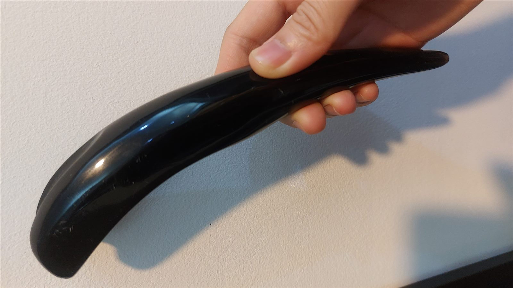

Start here
What is bojin, and how is it different from gua sha?
The plain, honest version, from someone who has taught it one face at a time for years.
Let me guess how it went. You bought a gua sha stone. Maybe jade, maybe rose quartz, the pretty one everyone was posting. You watched a couple of videos, ran it along your cheeks a few nights before bed, and then, somewhere between a long week and a tired evening, it slipped into a drawer.
Nothing bad happened. Nothing much happened either. The face in the mirror looked about the same.
Owning a tool and knowing how to use it are different things. Before adding another step to your routine, it helps to understand what this method actually teaches.
Bojin is a hands-on practice taught here as gentle facial and neck self-care. The Bojin Method organizes practice around sequence, tool angle, placement, and comfortable pressure. A gua sha stone is one tool you may use while learning; gua sha itself is also a practice.
A stone in a box can’t teach you anything. It can’t tell you where to start, which way to move, how firmly to press, or where to ease off. Most of us were handed the tool and never the method, so of course it felt like nothing. What was missing was never the object. It was the instructions no one gave you.
So what is bojin?
The word is 撥筋 (bō jīn), often used for hands-on work with soft tissue. On this site, it refers to the facial and neck self-care approach taught by Yu-Ting Lan, founder of Héhé Studio. Her instructor certificates and classroom photographs are available on that page. The word alone does not establish a treatment effect or tell you how much pressure to use.
What actually makes it work
The teaching framework has three practical choices: order, angle, and position. Comfortable pressure is part of every choice. These help you follow a repeatable routine; they are not proof that a tool reaches a particular tissue depth.
Order 順序
The sequence you work in. You read your own face first, then move in a set order, so your few minutes land where they help most.
Angle 角度
How you hold the tool against the bone. The right angle does the work. Force doesn’t.
Position 位置
The exact area shown in a demonstration, rather than guessing across the whole cheek. Placement includes knowing which areas to leave alone.
Keep your stone. Add the three. Bojin isn’t a gadget to rush out and buy. It’s the order, the angle, and the spot that tell the tool what to do.
The one thing everyone gets wrong: pressure
More pressure does not make a routine better. A light touch is useful when you are learning the contact and direction, especially around delicate areas.
If contact hurts, leaves bruising, or irritates your skin, stop. Do not treat these reactions as proof that the method reached deeper or worked better.
Use only comfortable contact. Adjust it to the area and your skin, and stop if there is pain or irritation. The safety guide explains when to skip hands-on face care altogether.
And you can start tonight with what you already have. Clean fingertips work. So does the gua sha stone in your drawer. You’re not buying your way in. You’re learning your way in.
Side by side
So how is it really different from gua sha?
They share roots, but as hands-on approaches they’re not the same. The honest short version:
Cleveland Clinic's facial gua sha guidance also recommends gentle contact and warns about aggressive scraping. That is general guidance about gua sha, not clinical evidence for Bojin.
Gua sha
Where it worksMany gentle facial routines use broad, gliding contact.
How it movesOne smooth direction, over a broad area.
Pressure and marksGentle facial routines differ from more forceful body scraping. Bruising is not a goal for at-home facial care.
Bojin
Teaching focusThe Bojin Method emphasizes placement, sequence, and comfortable contact. This is not a claim of deeper or superior tissue effects.
How it movesA precise spot, worked with the right order, angle, and pressure.
What to watch forComfort during and after practice. Pain, bruising, or irritation is a reason to stop.
Which approach feels useful depends on the routine you learn and how your skin responds. For a fuller comparison, read gua sha and bojin: two practices, one tool choice. For choosing what to hold, use the fingers, stone, or stick guide.
Straight talk
What bojin is not
I would rather you trust me than be dazzled, so here is the honest part.
- It isn’t a stronger gua sha. It’s a different job: the method behind the tool, not a contest with it.
- It isn’t medical care, and it isn’t a treatment for anything.
- It won’t remove wrinkles, erase bags, or do what an injection does. Anyone who promises that isn’t being straight with you.
- It isn’t pressing hard, and it isn’t barely touching. It’s the right, comfortable pressure: firm enough to feel, never enough to hurt.
What it can do is gentle and real: help your face look a little calmer, brighter, and more rested, and give you a few quiet minutes that are yours.
The complete can-and-cannot list, with nothing softened, is here: what bojin can and cannot do.

“The women who love this didn’t come to it for a miracle. They came for something honest they could do for themselves, a few minutes at a time.”
Your tool
The bojin stick

The traditional tool is a bojin stick: a slim, polished stainless steel tool, shaped to follow the curves of the face. It has two working ends. A broad, smooth edge for larger areas like the forehead, cheeks, and neck, and a small rounded tip for a narrower, demonstrated placement. A small tip concentrates pressure; never use it on the eyelid or eyeball.
Why stainless steel? It’s easy to keep clean, it doesn’t wear down over time, and it uses no animal materials. It sits light in the hand and glides smoothly when you add a little oil or cream.
You don’t need to buy anything to begin. Clean fingertips work beautifully while you learn, and so does the smooth edge of a gua sha stone you already own. A stick has a different contact shape, but you still choose its angle and pressure. Something to add when you’re ready, not a barrier to starting today.
See it
You can read about it, or watch a hand do it
Order, angle, and pressure make a lot more sense the moment you see them. Here’s the first technique, free, in about three minutes.
 The 3-minute Eye ResetFree · watch the order, angle & the exact spot
The 3-minute Eye ResetFree · watch the order, angle & the exact spot
Common questions
The questions women ask me most
Is bojin just gua sha with a different name?
No. Gua sha is a practice, and a gua sha stone is a tool. The Bojin Method is taught here through sequence, angle, placement, and comfortable pressure. You can learn with a smooth stone without treating the two practices as interchangeable. Read the full comparison.
Do I need to buy a special bojin stick to start?
No. Clean fingertips or the smooth edge of a stone you already own can help you learn contact and direction. A dedicated stick has a different shape, but it cannot choose safe placement or pressure for you. See how to choose a tool.
Is it safe, and does it hurt?
Done kindly it should feel good, never painful. The pressure is comfortable: firm enough to feel, never enough to hurt or drag the skin. Always use a little oil or cream so nothing pulls, avoid broken or irritated skin, stay off the eyeball itself, and stop if anything feels uncomfortable. This is gentle self-care, not medical treatment.
Is this only for older women?
The material here is written mainly for women over 40, but age alone does not determine whether hands-on face care is appropriate. Your skin, health, and any recent procedures matter more. Start with the safety guide.
How long until I see a difference?
There is no promised timeline or guaranteed appearance change. You may find a short routine relaxing, but that experience does not establish a lasting change in facial structure. Use comfort, rather than a dramatic before-and-after, to decide whether you want to continue.
Will bojin get rid of my wrinkles or replace Botox?
No, and it’s honest to say so. It won’t remove lines or do what an injection does. What it can do is soften held tension and help your face look a little more rested and relaxed, gently and temporarily. I keep the complete honest list in what bojin can and cannot do, and if you’ve had work done, here’s what to wait for. If you want a line changed at its source, that’s a conversation for a board-certified professional.
How often should I practice?
The beginner plan on this site uses two or three short sessions a week with space between them. That is a teaching arrangement, not a clinically established optimum for everyone. Skip practice if your skin is irritated or tender. See the frequency guide.
Is bojin a medical treatment?
No. It’s a gentle beauty and self-care ritual, not medical care, and it isn’t a treatment for any condition. If you have a skin or health concern, or anything on your face appears suddenly, sits on one side, or comes with pain, please see your doctor rather than working on it at the mirror.
Where to go from here
Pick the door that fits you right now.
However much or little you know, there’s a gentle first step from here. Brand new? Follow the guided beginner path from the top. Or pick the one door that fits you right now.
Ready to feel it?
See the method in three gentle minutes.
The free “Eye Reset” video shows you the order, the angle, and the exact spot, so you can feel the right, comfortable pressure for yourself.